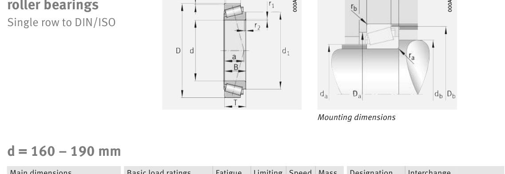

Original catalogue drawing - FAG Schaeffler HR 1, page 608

Scanned from the manufacturer catalogue page listing this part number. All part numbers printed on that table share the same drawing.
Scale cross-section
Blue = inner / outer ring, yellow = rolling element. Drawn to scale from this part's own
dimensions for selection reference only - not a manufacturing or assembly drawing.
Dimension table (mm / inch)
Symbol
Dimension
mm
inch
d
Bore diameter
180
7.0866
D
Outside diameter
320
12.5984
B
Inner-ring / bearing width
52
2.0472
T
Overall assembly width
57
2.2441
C
Cup / outer-ring width
43
1.6929
Notes
Weights are given in kg. Load ratings are shown in both the original catalogue units and the converted value (1 N = 0.2248 lbf). Data is provided for selection reference only - confirm against the latest official catalogue before ordering.
Main dimensions
Bore d (mm)
180
Outside dia. D (mm)
320
Width B (mm)
52
Overall width T (mm)
57
Cup width C (mm)
43
Inner-ring OD d1 (mm)
241
Load ratings & speeds
Basic dynamic load rating Cr (lbs)
161862
Basic static load rating Cor (lbs)
191088
Basic dynamic load rating Cr (N)
720000
Basic static load rating C0r (N)
850000
Basic dynamic axial rating Ca (N)
9
Fatigue limit load Cur (N)
105000
Factor e
0.45
Factor Y
1.33
Factor Y0
0.73
Limiting speed nG (rpm)
2,420
Reference speed nB (rpm)
1,510
Effective load centre a (mm)
62
Weight
Weight (kg)
17.7
Mounting dimensions (fillets / shoulders)
Chamfer r2 min (mm)
5
Shaft shoulder da (mm)
211
Shaft shoulder db (mm)
198
Housing shoulder Da (mm)
278
Housing shoulder Db (mm)
297
Housing fillet ra max (mm)
5
Fillet rb max (mm)
4
Bearing life (ISO 281 basic rating life)
C / P
Equivalent load P (N)
L10 (106 rev)
L10h at 800 rpm
4
180,000
102
2,117
6
120,000
392
8,177
8
90,000
1,024
21,333
10
72,000
2,154
44,884
15
48,000
8,323
173,406
Basic rating life per ISO 281: L10 = (C/P)10/3 with C = 720,000 N. Hours = L10 x 106 / (60n). Life-modification factors for lubrication, contamination and temperature (aISO) are not included.
Source & traceability
Brand
FAG
Source catalogue
FAG / Schaeffler Rolling Bearings HR 1
Catalogue page
p.608 (dimensions)
Load ratings in newtons, fatigue limit load Cur, limiting speed nG and reference speed nB.
Send us the quantity you need and we will come back with price and
lead time, normally within 24 hours. Equivalent parts from other brands can be quoted at the same time.